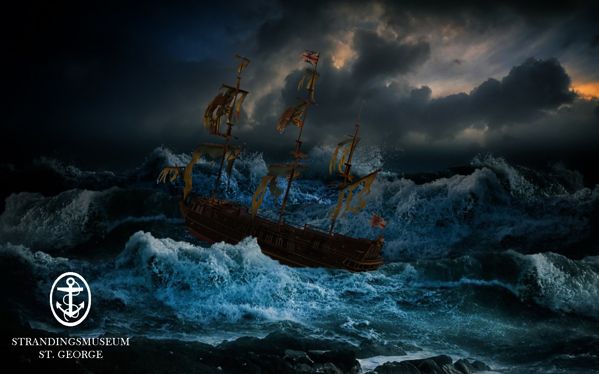
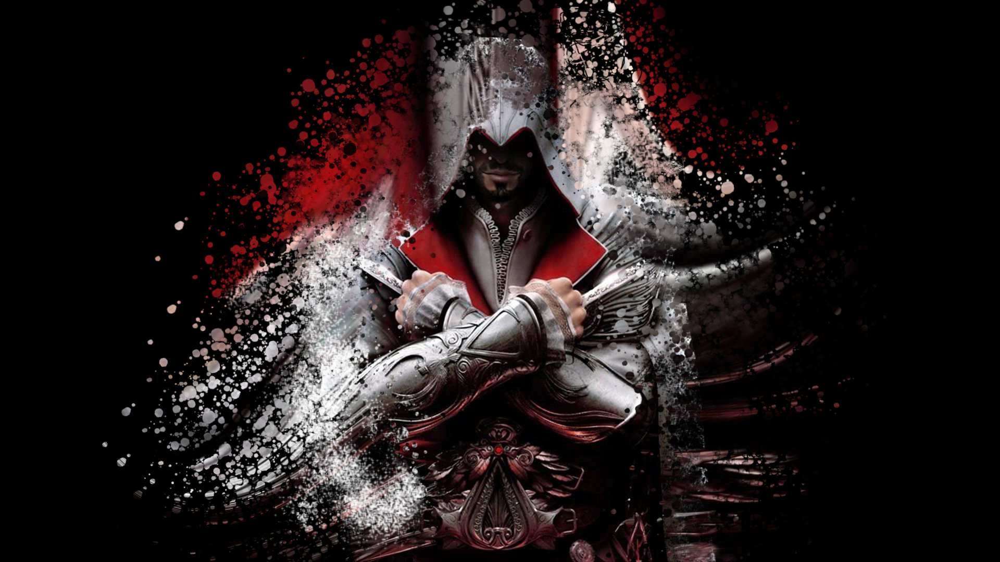
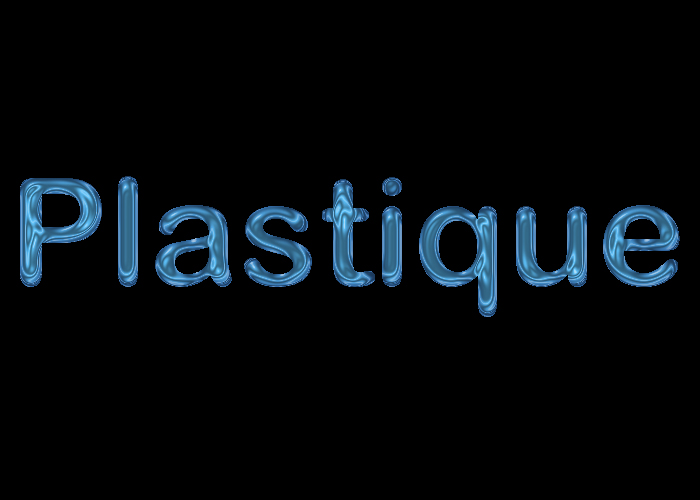

Adobe Photoshop
Photoshop som i navnet ”Photo” betyder billedredigeringsprogram og det program som er mest kendte til at redigere billeder.
Photoshop blev oprettet i 1987 af brødrene Thomas og John Knoll.
Værktøj
I photoshop kan man arbejde med forskellige redskaber blandt andet Layers, Paths, Brush tools, styles.
Layers
Layers også kaldt lag, bliver brugt hele tiden, hver gang man ligger nået ind, laver noget nyt, eller beskær noget opretter den et nyt lag. Det er en god ide at give alle lagede nye navne for bedre at finde rundt i dem. Men det gode ved at de lave nye lag er at det er nemmer at lave ting om, og prøve f.eks. flere farver.
Brush Tools
Hvis man skal sammenligne brush tool med noget fra den virkelige verden, kan man sammenligne det med en pensel. Når man bruger brush tool farver den altid med den aktive forgrundsfarve man har valgt på det tidspunkt man vælger brush tool. Hvis man bruger pencil tool skal man være opmærksom på at den er lidt anderledes end brush tool, da ligesom brush bruger pencil også forgrundsfarven til at tegne med, men forskellen er at pencil tool er et pixelbaseret værktøj, da den kun kan tegne streger. Hvis man holder shift nede samtidig, tegnes der lige linjer mens musen bevæges.
Kilder: Forlaget A & H: Introduktion til Adobe Photoshop 17
Golfboldene

Til at starte med var billede i farver, derfor gik jeg ind i image og ændre under mode fra RGB Color til Grayscale. Men fordi jeg gerne vil havde andre farver på så skulle jeg ind og redigere det tilbage til RGB Color igen, men fordi det er fra Grayscale til RGB forbliver billede sort/hvid. Efterfølgende har jeg brugt Quick selection tool til at indramme hver enkelt golfbold (en af gangen) og color balance til at give dem forskellige farver
Strandingsmuseum
Efter vi var på stranding museum fik jeg lyst til at prøve med lidt flere kræfter. Efter vi fik en længere historie omkring Skibet St. Georgs som gik tabt i et voldsomt uvejr. Jeg googlede billeder af skibet, stormvejr og deres logo. Til at starte med arbejdede jeg med billede af skibet, jeg fjerne baggrunden, jeg fjerne solens lys på skibet ved hjælp af Inner shadow. Så skulle jeg havde styr på baggrunden, jeg fandt et billede, men jeg synes der manglede nogle bølger, så jeg tog Quick selection tool og marker de bølger jeg gerne vil at flere af og højre klikker på musen og kopier til nyt lag og det gjorder jeg to gangen. Men for at få det til at se ud som om det ikke er de samme billeder, så bølgen i midten spejlvendte jeg, og gjorder lidt lyser ved hjælp af Hue/Saturation. Så sat jeg skibet ind i billedet, men for at skibet ind i ud i vandet, så det ser ud som om skibet rent faktisk sejler på vandet, så flyttede jeg forreste bølge frem, så man gør ved at flytte laget op over laget med skibet. Og til sidst sat jeg logo ind i bunden.
Her er lidt flere eksempler på hvad jeg har lavet i photoshop.

